T-Shirt Design File
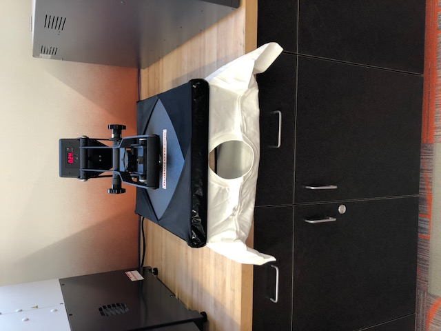 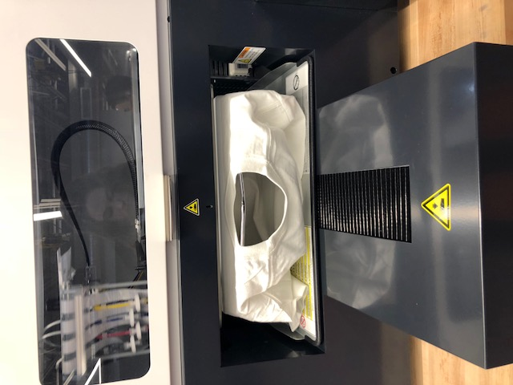 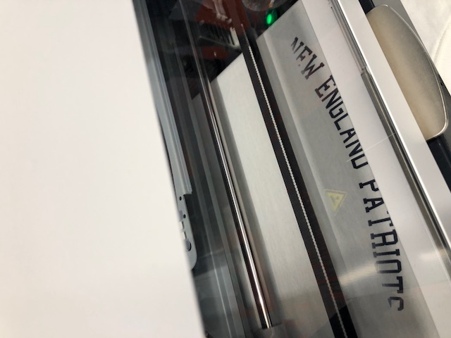 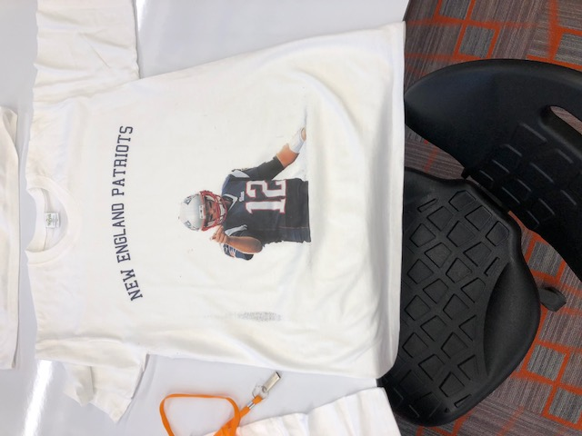

Sublimation Printing
Using the Brother GT-361, I was able to make a T-shirt. To make the design for the t-shirt, I used Adobe Photoshop to cut out a picture of Tom Brady, I then copied the picture to a blank page in Corel Draw and typed above. I saved the final design as a jpg and downloaded it onto a flash drive. Next, I grabbed a blank t-shirt and heated it so it would be flat. I then put the shirt into theBrotherGT-361 and plug my flashdrive in. My t-shirt came out with my design on it. After I heated ita gain to dry the ink.
T-Shirt Design File
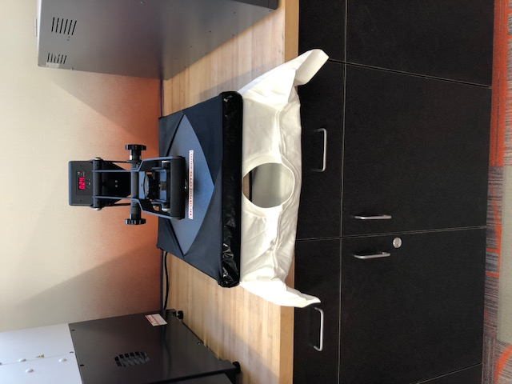
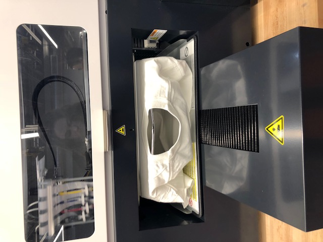
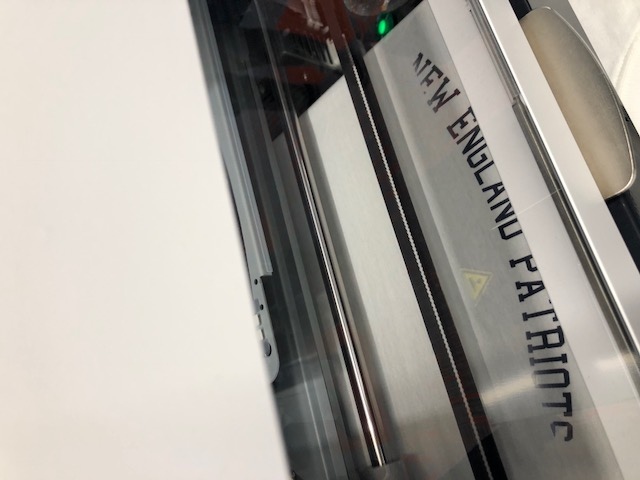
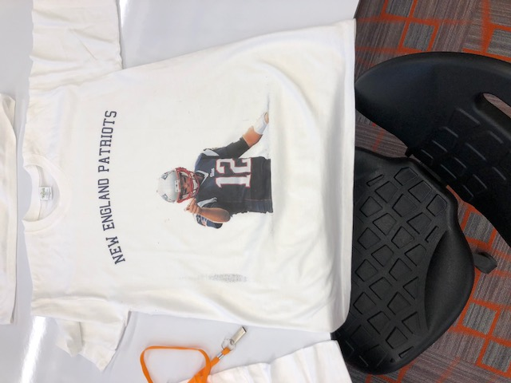
Sublimation Printing
For my dye sublimation project, I made a dog bowl. First, I went to The Conde Dye Trans website and picked out the dog bowl that Mr. Gerber then ordered. To design my bowl, I went used Corel Draw and Adobe photoshop. First, I had to down load the dog bowl template. On my dog bowl, I wanted pictures of my dog, so I cut out their faces from pictures in photoshop and copied them to Corel Draw. I had to fill two of the templates with pictures because one only went half way around the bowl. When I finished my designs, I save them and put them on a flash drive. I walked it over to the Sawgrass 800 printer and printed out the two designs. Next, I cut them out and wrapped them around my dog bowl with heat resistant tape and a dye wrap. I needed to heat it, so I set the oven to about 400 degrees and heated it for 15 minutes. When it was finished, my design, that was on the paper, transferred to the bowl. After letting it cool, I was able to take the bowl home and feed my dogs with it.
Bowl Design File
Conde Dye Trans Website
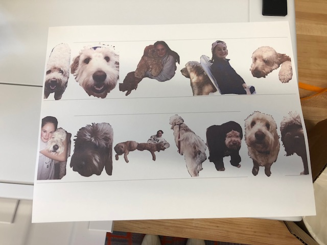
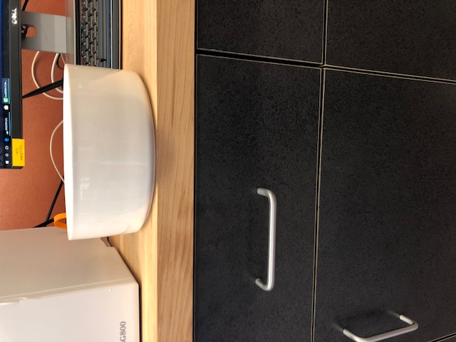
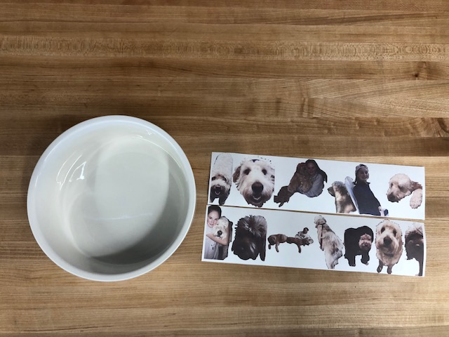
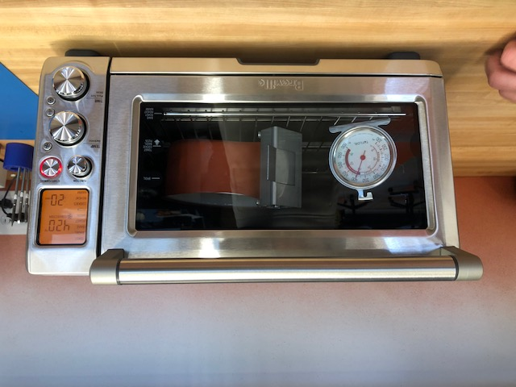
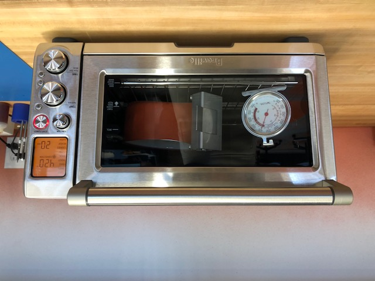

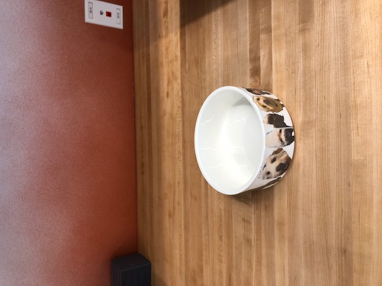
Home